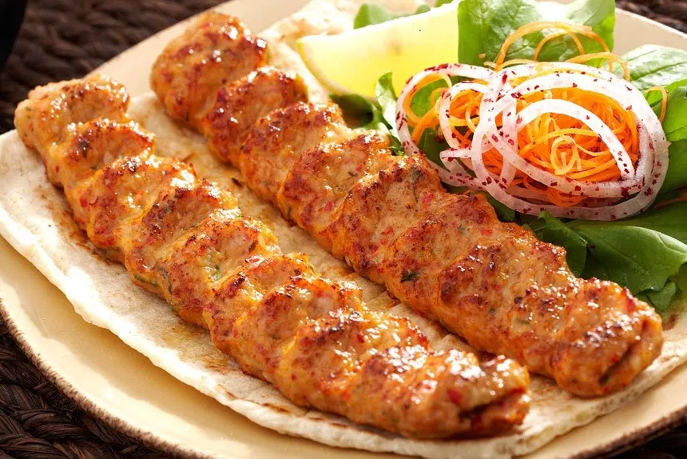

Traditional Iraqi Kebaab

Description
These kebaabs are soft and have strong taste, they will melt in your mouth and you will wish that time stops and you live in that moment till time no longer has a meaning, you will witness the birth and the death of the universe and you will see no difference. This dish is best served with hummus. Iraqi kebabs are typically made with ground meat, onions, garlic, and spices, and are often grilled or fried. Here’s a recipe that combines the flavors and techniques of traditional Iraqi cuisine.
Ingredients:
- 1 pound ground beef
- 1/2 cup finely chopped onion
- 3 cloves garlic, minced
- 1 teaspoon ground cumin
- 1 teaspoon ground coriander
- 1/2 teaspoon ground turmeric
- 1/2 teaspoon salt
- 1/4 teaspoon black pepper
- 2 tablespoons vegetable oil
- 2 tablespoons chopped fresh parsley
- 2 tablespoons chopped fresh cilantro (optional)
- 2 eggs, beaten (for frying)
Steps:
- In a large mixing bowl, combine ground beef, chopped onion, garlic, cumin, coriander, turmeric, salt, and black pepper. Mix well with your hands or a spoon until just combined.
- Divide the meat mixture into 8-10 portions, depending on desired kebab size. Shape each portion into a ball and then flatten slightly into a disk shape.
- Heat 1 tablespoon of vegetable oil in a large non-stick skillet over medium-high heat. When hot, add 2-3 kebabs to the skillet (do not overcrowd).
- Cook the kebabs for 4-5 minutes on each side, or until they are golden brown and crispy. Repeat with remaining kebabs.
- Alternatively, you can grill the kebabs over medium-high heat for 4-5 minutes per side, or until cooked through.
- Serve the kebabs hot with a sprinkle of parsley and cilantro (if using). Traditionally, Iraqi kebabs are served with a side of creamy hummus, garlic sauce (Toum), and pita bread.
NOTE:
If you prefer a crispy exterior, you can coat the kebabs with a mixture of flour, eggs, and breadcrumbs before frying. Simply dip each kebab in the beaten eggs, then coat with a mixture of 1/2 cup all-purpose flour, 1/4 cup breadcrumbs, and a pinch of salt. Fry the kebabs in hot oil (about 350°F) for 2-3 minutes on each side, or until golden brown and crispy.